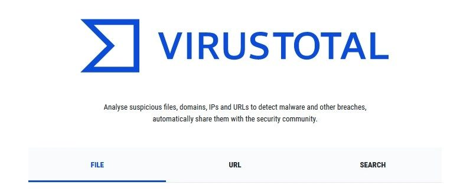
Consigli · 14 giugno 2023
VIRUS TOTAL
Quante volte hai ricevuto un file allegato sospetto da un indirizzo mail sconosciuto, ma delle volte anche da un collega, un cliente, un fornitore…
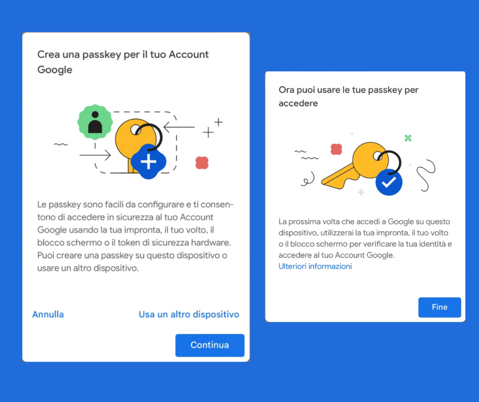
Approfondimenti · 04 maggio 2023
GOOGLE - TECNOLOGIA PASSKEY
A partire dal 3 maggio, é possibile accedere all'account di Google anche senza password grazie alla tecnologia passkey che può sostituire non solo la…
 Superato
Superato
Consigli · 13 luglio 2022
BONUS VEICOLI SICURI
Bonus Veicoli Sicuri. COS'E' e COME OTTENERLO? Il Bonus Veicoli sicuri è il contributo erogato in favore dei proprietari di veicoli a motore che,…
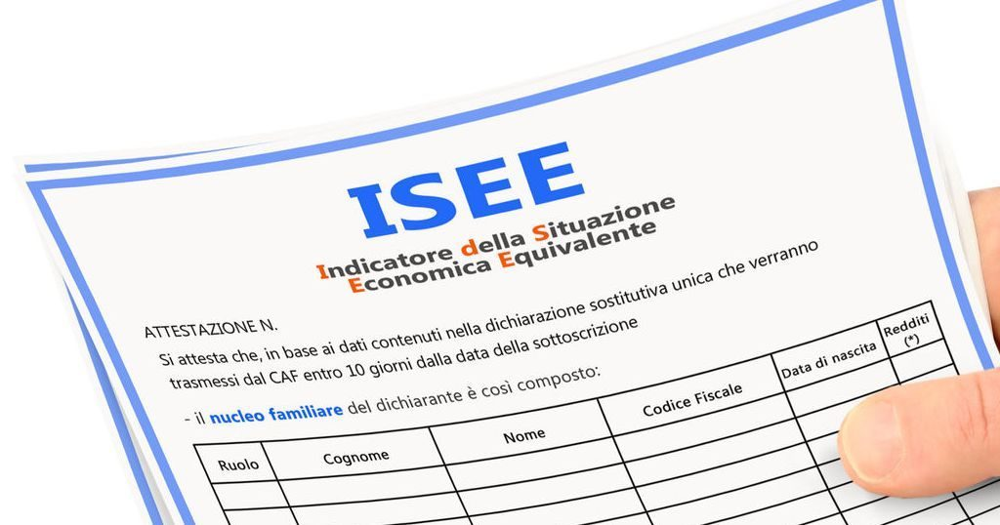
Consigli · 06 aprile 2022
ATTESTAZIONE ISEE, COME SCARICARLA ONLINE.
L’attestazione ISEE viene emessa dall’INPS qualche giorno dopo aver inoltrato la DSU. Se l’utente è in possesso delle credenziali di accesso, p uò…

Consigli · 03 febbraio 2022
ON LINE - Cup Unico Regione ABRUZZO
Dal 20 GENNAIO è operativo il nuovo Cup regionale, che consente di prenotare on-line, 24 ore su 24, le prestazioni di specialistica ambulatoriale…
 Superato
Superato
Consigli · 13 gennaio 2022
ON LINE - L’ESITO dei referti dei TAMPONI
Dal 12 GENNAIO è possibile visualizzare ONLINE - L'ESITO dei referti dei TAMPONI molecolari e dei test antigenici eseguiti nelle strutture della…

Accessori · 03 gennaio 2022
MODEM ROUTER 4G: cosa sono e perché sono utili
Le bollette sono salate, la connessione internet va e viene, è più il tempo che perdi a maledire il tuo modem e non sai come fare? La soluzione ce…
Approfondimenti · 09 novembre 2021
Rivoluzione Anagrafe - Certificati online
Rivoluzione anagrafe: basterà lo Spid per scaricare 14 diversi tipi d i certificati. I certificati digitali saranno completamente gratuiti e non si…
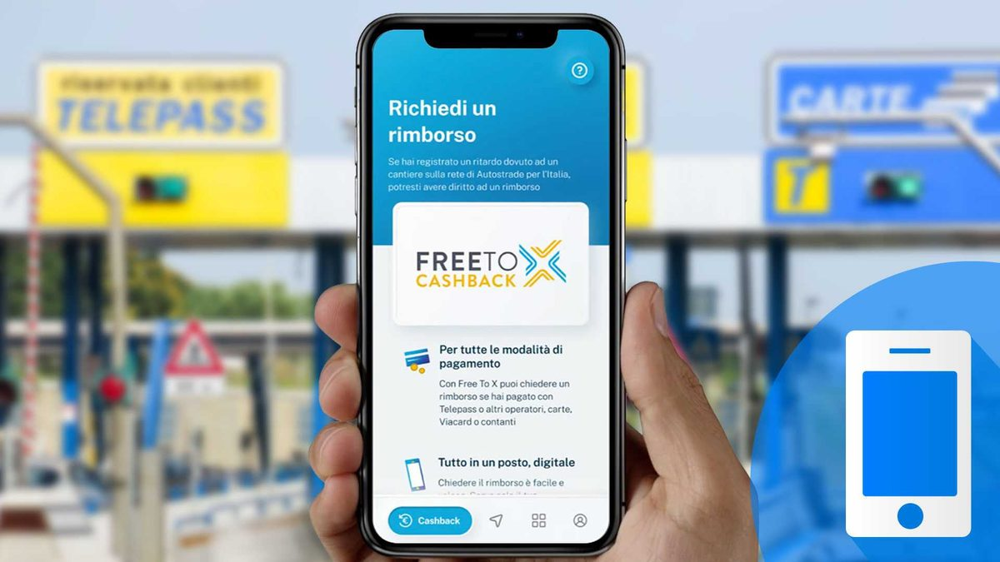
Superato
Approfondimenti · 22 ottobre 2021
RIMBORSI PEDAGGI PER RITARDI CAUSA LAVORI
È arrivato il Cashback per i tuoi viaggi in autostrada. Rimborsano dal 25% al 100% del pedaggio a partire da 15 minuti di ritardo dovuto a cantieri…
Consigli · 16 agosto 2021
Cybersecurity anche in estate: 8 consigli utili
Attenzione ai cyber attacchi, anche e soprattutto quando si è in vacanza. Durante l’estate, infatti, aumentano i rischi, con i cyber criminali pronti…
 Superato
Superato
Approfondimenti · 17 giugno 2021
Digital Green Pass
È online da pochi minuti la piattaforma Digital Green Certificate, all’indirizzo https://www.dgc.gov.it , dove gli italiani possono scaricare il…
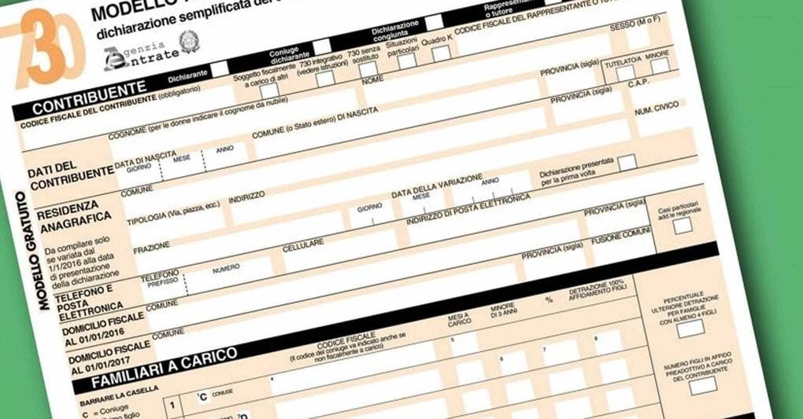
Approfondimenti · 01 giugno 2021
Come fare il 730 precompilato online da soli
Per chi lavora con un contratto a tempo indeterminato o determinato è essenziale procedere annualmente con la dichiarazione dei redditi, utilizzando…
Consigli · 06 maggio 2021
GERONIMO STILTON - Navigare Sicuri
Se lo desideri, iscriviti ai mie canali social per restare aggiornato
 Superato
Superato
Approfondimenti · 22 febbraio 2021
IL NUOVO SEGNALE DIGITALE
A partire da settembre 2021, molti televisori non saranno più in grado di ricevere il nuovo segnale televisivo. Cambia infatti lo standard delle…
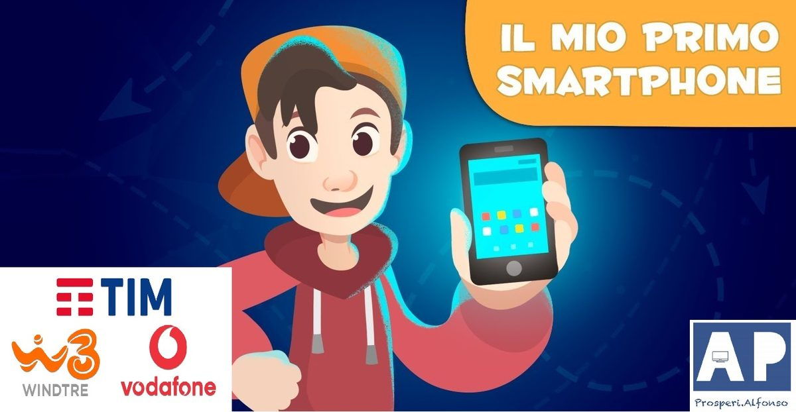
Consigli · 11 febbraio 2021
CELLULARE PER BAMBINI - MIGLIORE OPERATORE
Ad oggi il cellulare è divenuto d'uso comune, spesso per abitudine, ma anche per necessità. L'età media per l'acquisto del primo smartphone, con il…
 Superato
Superato
Approfondimenti · 01 febbraio 2021
LOTTERIA DEGLI SCONTRINI - COME PARTECIPARVI
LOTTERIA DEGLI SCONTRINI - Lotteria degli scontrini al via dal 1° febbraio 2021 pagando con strumenti tracciabili: chi partecipa, come funziona,…

Approfondimenti · 26 gennaio 2021
RECENSIONI ON LINE A CONFRONTO
Le recensioni online sono oggi cruciali per ogni business ed attività locale che vuole controllare la propria reputazione e aumentare le vendite
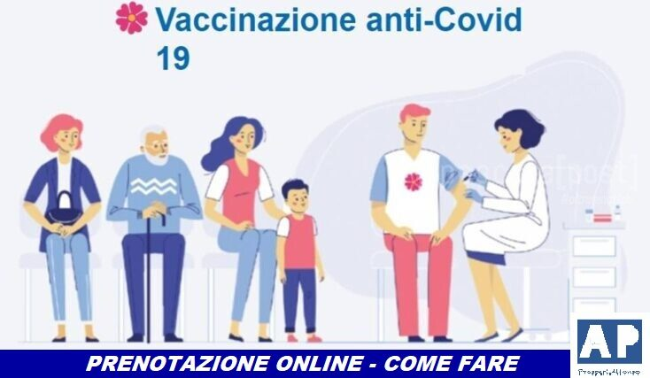
Superato
Approfondimenti · 18 gennaio 2021
PRENOTAZIONI VACCINO COVID-19
Attiva da oggi, lunedì 18 gennaio, la piattaforma telematica della Regione Abruzzo per la vaccinazione anti Covid 19 per le seguenti categorie
Consigli · 05 gennaio 2021
PASSWORD e SICUREZZA
PASSWORD e SICUREZZA Dopo il noto attacco hacker al gestore telefonico del gruppo Vodafone: Ho Mobile, che si è visto sottrarre oltre i dati…
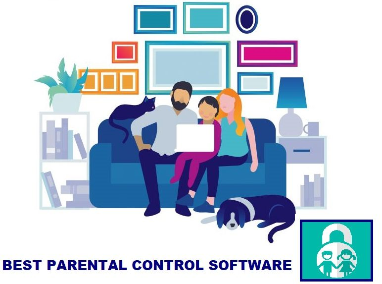
Approfondimenti · 26 dicembre 2020
PARENTAL CONTROL
PARENTAL CONTROL - Che cos'è e le migliori APP / Software in circolazione
Consigli · 10 dicembre 2020
PC LENTO? CONSIGLI UTILI
Se il computer è lento, ecco alcuni consigli per ottimizzarlo e renderlo più veloce
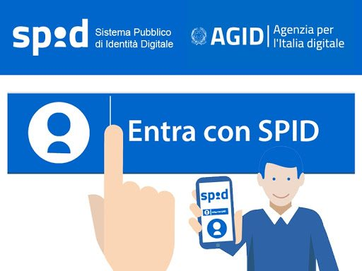
Approfondimenti · 04 dicembre 2020
SPID
SPID è un’abbreviazione di Sistema Pubblico di Identità Digitale e si tratta di un sistema di identificazione unico che permette ai cittadini e alle…
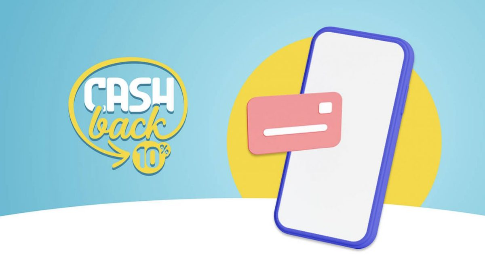
Superato
Approfondimenti · 04 dicembre 2020
CASHBACK & CASHLESS
CASHBACK di Stato - Piano CASHLESS Italia - Cosa sono, e come funzionano?

Approfondimenti · 02 dicembre 2020
Amazon Warehouse Deals & Amazon Recommerce
AMAZON WAREHOUSE DEALS & AMAZON RECOMMERCE. Come anticipato, visto l'interesse per il precedente articolo sull'utilizzo gratuito della piattaforma…

Consigli · 27 novembre 2020
KEEPA
KEEPA - Se acquisti spesso su Amazon e vuoi essere sicuro di acquistare al miglior prezzo, di fare il giusto acquisto senza spendere troppo, e vuoi…
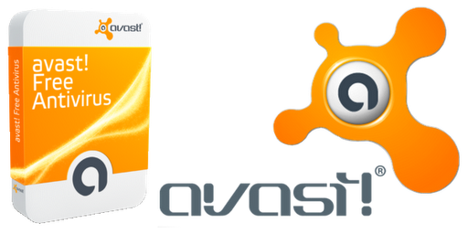
Approfondimenti · 25 novembre 2020
AVAST FREE ANTIVIRUS
Avast è uno dei software antivirus più utilizzati al mondo. Esso è caratterizzato da un’interfaccia utente estremamente intuitiva e da un sistema di…

Consigli · 23 novembre 2020
Google Meet vs Zoom vs Microsoft Teams
Una delle piattaforme che ha avuto maggior successo è Zoom. Essa fino a poco tempo fa aveva 10 milioni di utenti giornalieri; ora ospita oltre 300…

Approfondimenti · 16 novembre 2020
FOOD LOVERY
FOOD LOVERY - Cos'è e come funziona realmente? I suoi servizi e le sue opportunità

Approfondimenti · 13 novembre 2020
Google - Le categorie più cercate
Per rispondere a questa domanda Google ha lanciato un nuovo tool gratuito chiamato “Google Categorie Retail in crescita" nel sito “Think with…
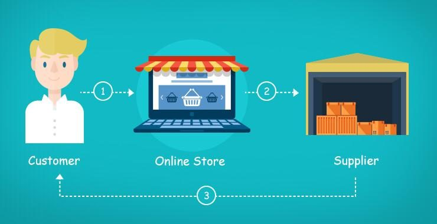
Approfondimenti · 11 novembre 2020
DROPSHIPPING
DROPSHIPPING - Che cos'è, come funzione e perché è molto di moda?
 Superato
Superato
Approfondimenti · 09 novembre 2020
BONUS PC, TABLET E INTERNET VELOCE
BONUS PC, TABLET E INTERNET VELOCE - A chi è rivolto, come fare domanda?
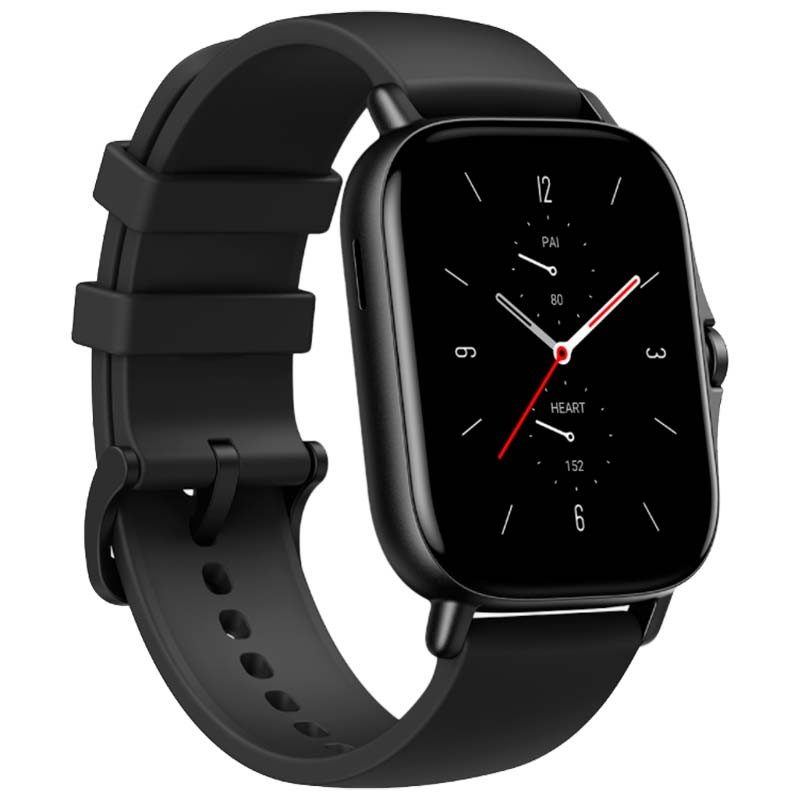
Accessori · 04 novembre 2020
Amazfit GTS 2
Amazfit GTS 2: prezzo, caratteristiche, uscita e notizie in Italia
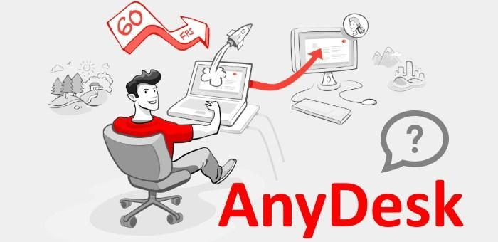
Consigli · 04 novembre 2020
ANY DESK
AnyDesk - Un’ottima soluzione Software di desktop Remoto

Telefonia · 03 novembre 2020
IPHONE 12 PRO
Da poco disponibile anche in Italia, è arrivato il nuovo Iphone 12 Pro ed a breve anche il nuovo Iphone 12 Pro Max. La prima cosa che viene da dire è…
Approfondimenti · 02 novembre 2020
E-COMMERCE
Si sente spesso parlare di E-commerce, ma cos'è e come si differenzia?
 Superato
Superato
Approfondimenti · 31 ottobre 2020
IMMUNI
Immuni è un’applicazione creata per aiutarci a contenere le pandemie, a partire da quella del Covid-19. Grazie anche alla funzionalità di contact…

Approfondimenti · 28 ottobre 2020
SATISPAY vs PAYPAL
I pagamenti smart si stanno diffondendo sempre più, ma Satispay e PayPal sembrano avere una marcia in più. Ecco alcune loro caratteristiche e…
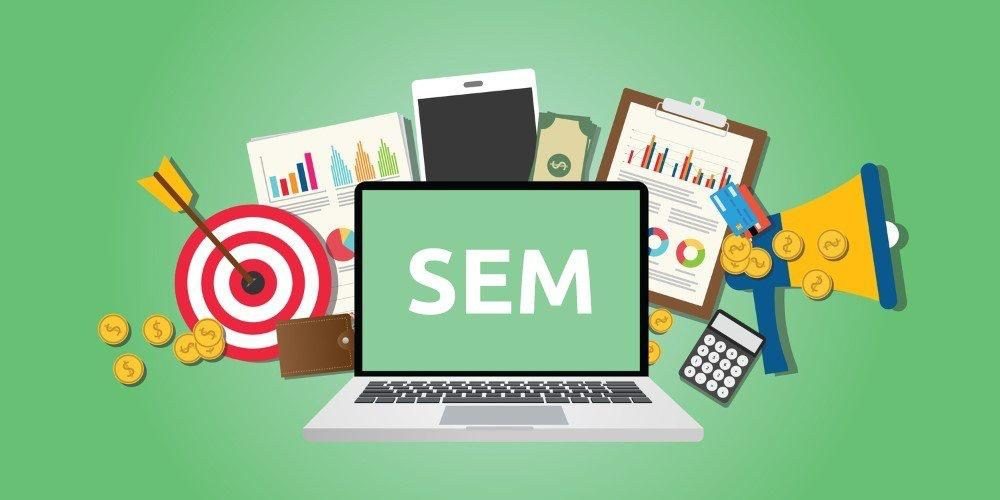
Programmazione · 25 ottobre 2020
SEM
SEM sta per “Search Engine Marketing” e identifica un ambito più ampio della SEO (precedentemente trattata) che include la stessa SEO ma anche la…

Programmazione · 23 ottobre 2020
SEO - 2
Ecco alcuni consigli per attuare una buona campagna SEO
Programmazione · 20 ottobre 2020
SEO
In inglese S.E.O. è l’acronimo di “Search Engine Optimization”, tradotto letteralmente: "ottimizzazione per i motori di ricerca"
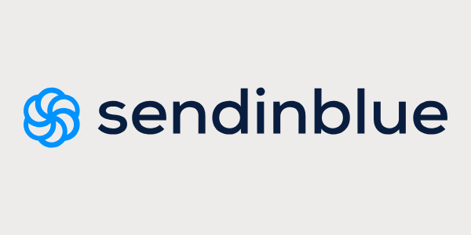
Consigli · 18 ottobre 2020
MAIL MARKETING
Se hai necessita o desideri inviare mail Marketing promozionali dei tuoi prodotti a clienti, o possibili clienti, in maniera
Programmazione · 15 ottobre 2020
CREARE UN SITO INTERNET
Se desideri creare un tuo sito web dove farti conoscere, parlare di te, presentare i beni e servizi che offri per ampliare la tua clientela, ecco le…
Consigli · 11 ottobre 2020
WHATSAPP BUSINESS
Se utilizzi spesso WhatsApp per lavoro e vorresti rendere più professionale, produttivo ed efficiente il tuo modo di lavorare, ti consiglio…
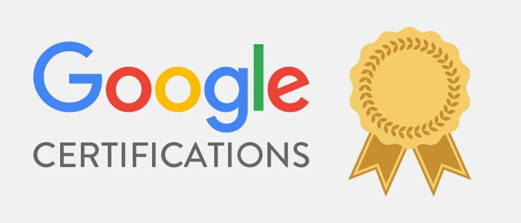
Consigli · 07 ottobre 2020
FORMAZIONE CON GOOGLE
Se vuoi scoprire una serie di contenuti pensati per aiutarti a far crescere la tua attività o a migliorare nel lavoro di tutti i giorni, GOOGLE mette…
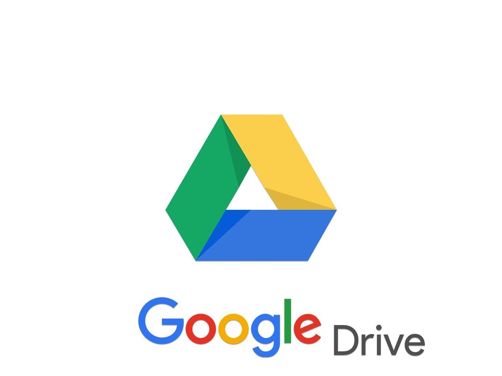
Consigli · 04 ottobre 2020
GOOGLE DRIVE
Se hai necessità di archiviare gratuitamente documenti, certificati, bollette, ricevute di pagamento, analisi, esami, buste paga, documenti…
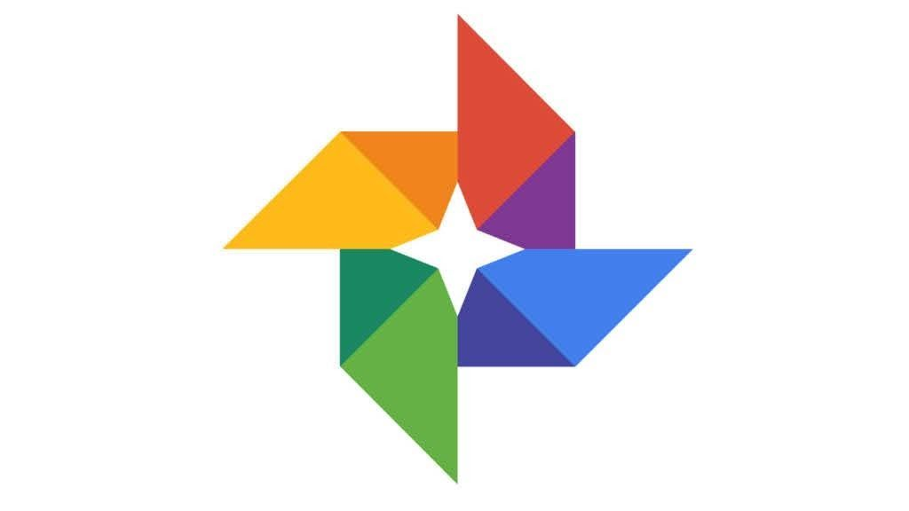
Consigli · 01 ottobre 2020
GOOGLE FOTO
Se hai tantissime foto e video dei tuoi bellissimi ricordi ed hai paura di perderli se accidentalmente i tuoi dispositivi si rompano o vorresti…